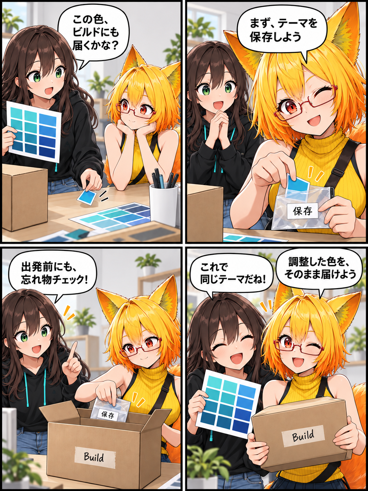

調整した色を、そのまま届ける。UIテーマをビルドへつないだ日
エディタで整えたUIテーマは、Playerビルドにも同じ状態で入ってほしいものです。VRASでは、テーマの保存状態を分かるようにし、保存操作とビルド直前の確認をつなげました。

テーマの現在地を、編集画面で分かるように
UIテーマのリアルタイム調整画面に、テーマが保存済みか、未保存の変更が残っているかを示す表示を追加しました。あわせて「テーマを保存（ビルドへ反映）」という操作を設け、テーマを保存する処理を既存の保存操作とも共通化しています。
ビルドの直前にも、正本を確かめる
テーマは Desktop UI Theme アセットを正本として扱います。今回追加したビルド前処理は、このアセットを読み込み、未保存の変更が残っているときだけ保存します。ビルドへ渡すテーマが古いディスク上の内容にならないよう、出発直前にも確認する仕組みです。
保存を一つの経路にそろえる
編集画面の専用ボタンと既存の「設定を保存」は、同じ保存処理を利用します。この処理では編集内容を反映し、テーマを変更済みとして記録してからアセットを保存します。編集時の確認とビルド前の確認を重ね、調整した内容をPlayerビルドへ引き渡す経路を明確にしました。
ほかにも進んだこと
同じ期間には、ビルド版で背景ライブラリを再読込する際の修正、VR UIボタン入力のフォールバック、ビルド版の環境表現と水鉄砲に関する不具合修正も進みました。今回は、日々の見た目の調整をビルドへ届けるUIテーマ保存に焦点を当てています。
4コマの裏話
色見本、保存用の封筒、ビルド行きの箱で、編集時の保存と出発直前の確認を小包の受け渡しに置き換えました。実際のアプリ画面やビルド実行を再現したものではありません。
まとめ
テーマの保存状態を確認できるようにし、明示的な保存操作とビルド前の保存を用意することで、エディタで整えたUIテーマをPlayerビルドへ確実に渡す土台を整えました。
本日のひとこと
選んだ色まで、一緒に届けよう。